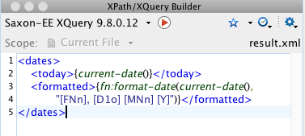

Normalerweise würde man zwischen den
einzelnen Anweisungen einen Blockabschluss, wie ein Semikolon erwarten.
Da wir aber hier funtional prorgammieren, ist die Sache etwas anders...
4.5
Abfragen mit XQuery
Xquery führt im Publishing-Bereich ein Schattendasein. In meiner Zeit als XSL Programmierer für zwei Publishing Firmen hatte
ich damit nie zu tun. Erst als ich näher an den eigentlichen Daten war und mit XML Datenbanken zu tun hatte, kam ich mit XQuery
in Berührung.
Aber auch einzelne XML Dokumente können z.B. in Oxygen XML Editor mit dem XQuery Builder Tool
↗↗
oder auch per Saxon Kommandozeile abgefragt werden:
java -cp usr/lib/saxon/saxon.jar net.sf.saxon.Query
-s:"schulen.xml"
-qs:"/schulen/schule[id='6']"
-o:"/Users/Alex/Desktop/schule_6.xml"Mit der Option -qs kann hier der Querystring angebenen werden.
Wie man an dem einfachen Beispiel schon sieht, ist XQuery mit XPATH verwandt. XQuery umfasst den Sprachumfang von XPATH bietet
aber zusätzlich die FLOWR Syntax um mächtigere Abfragen stellen zu können. Mittels weiterer Extensions
↗↗
können aber auch ganze Programme erstellt werden, die weit über die Funktionalität einer "Abfragesprache" hinausgehen.
4.5.1
XQuery Builder
Oxygen XML Editor bietet eine schöne Möglichkeit XQuery-Abfragen
auf einem geladenen XML Dokument auszuführen. Dazu kann man
seine Query in das betreffende Eingabefenster schreiben.

Fig. 5 oXygen XQuery Builder
Mit folgendem Ergebnis:
<dates> <today>2019-01-16+01:00</today> <formatted>Wednesday, 16th January 2019</formatted> </dates>
4.5.2
FLOWR Expression
FLOWR steht für for, let, where, order by, return. Das sind die Query-Anweisungen, die in
dem Ausdruck erlaubt sind - in genau dieser Reihenfolge.
let $bibliothek := .
for $x in $bibliothek//buecher,
$y in $bibliothek//autoren/autor
where starts-with($autor, 'Grass')
and $x/@autorId = $y/@id
return $x/titelIn dieser Query werden die Titel aller Bücher von Grass zurückgeliefert.
Bemerkenswert ist hier die Syntax.
NOTE
4.5.3
XML per XQuery
Es ist aber auch möglich XML zu erzeugen, wobei natürlich für eine Transformation XSLT
vorzuziehen ist. Dazu werden Tags direkt in die Expression geschrieben, wie z.B. hier:
declare variable $nachname as xs:string external;
<buecher autor="{$nachname}">
{
let $bibliothek := .
for $x in $bibliothek/buecher//buch,
$y in $bibliothek/autoren//autor
where starts-with($y, $nachname)
and $x/@autorId = $y/@id
order by $x/ausgabe
return
<buch ausgabe="{$x/ausgabe}">
{$x/titel}
</buch>
}
</buecher>Speichert man dieses Schnippsel in einer Datei buecher.xquery ab,
so kann man mit der folgenden Kommandozeile auf einer buecher.xml
Datei als Eingabe suchen:
java -cp usr/lib/saxon/saxon.jar net.sf.saxon.Query -t -s:buecher.xml
-q:buecher.xquery
-o:ergebnis.xml
nachname=grass4.5.4
Document Projection
Document Projection
↗↗
ist ein verstecktes Saxon XQuery Feature. Es funktioniert nur für eine einzige Abfrage.
Das kann schon recht hilfreich sein, wenn man ein mehrere 100MB großes Dokument durchsuchen
will.
Ohne Projection würde das Beispiel von oben so verarbeitet:
java -cp usr/lib/saxon/saxon.jar net.sf.saxon.Query -t
-s:buecher.xml
-q:buecher.xquery
-o:ergebnis.xml
-projection:off
nachname=grass
Saxon-EE 9.7.0.20J from Saxonica
Java version 1.8.0_60
Using license serial number V005095
Analyzing query from Desktop/buecher.xquery
Generating byte code...
Analysis time: 201.10095 milliseconds
Processing file:/Users/Alex/buecher.xml
Using parser com.sun.org.apache.xerces.internal.jaxp.SAXParserImpl$JAXPSAXParser
Building tree for file:/Users/Alex/buecher.xml
using class net.sf.saxon.tree.tiny.TinyBuilder
Tree built in 3.482278ms
Tree size: 46 nodes, 58 characters, 6 attributes
Execution time: 27.137589ms
Memory used: 67031664Mit der Option -projection:on verändert sich die Ausführungszeit signifikant:
[...] Document projection for file:/Users/Alex/buecher.xml -- Input nodes 50; output nodes 27; reduction = 46% Tree built in 3.80615ms Tree size: 26 nodes, 58 characters, 3 attributes Execution time: 15.83463ms Memory used: 64339064